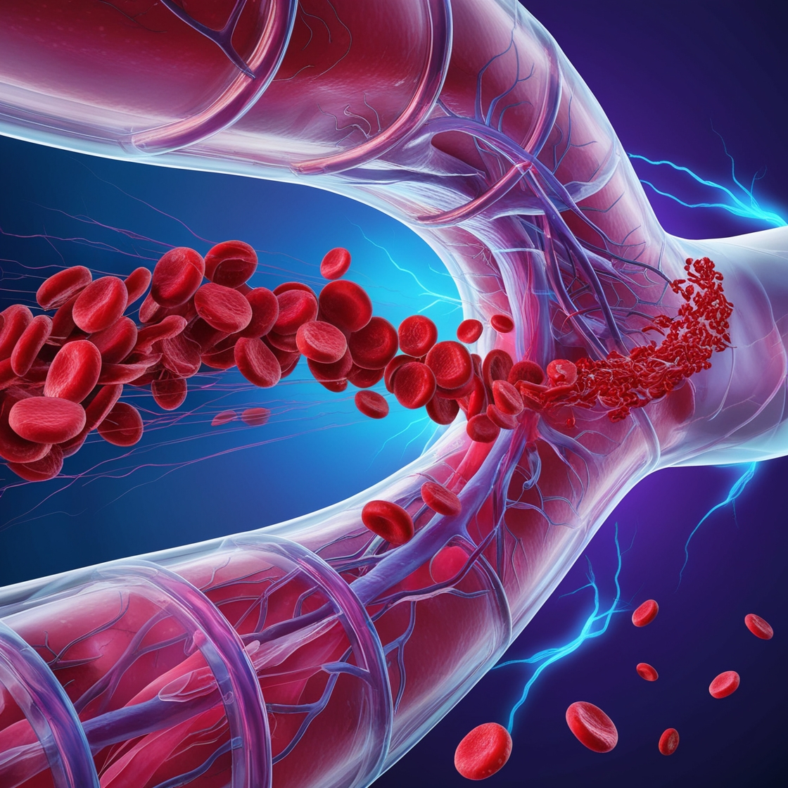

About Blood Donation
Blood donation is a voluntary procedure that can help save the lives of others. There are several types of blood donation, which help meet different medical needs:
Whole Blood Donation: This is the most common type of blood donation, where you donate about a pint of blood.
Platelet Donation: Platelets are cells in your blood that help with clotting. This type of donation is done through a process called apheresis.
Plasma Donation: Plasma is the liquid part of your blood. Plasma donation is also done through apheresis.
Double Red Cell Donation: This allows you to safely donate two units of red cells during one donation while your plasma and platelets are returned to you.
Additional Information
Here are some additional points to consider about blood donation:
- Eligibility: Generally, anyone who is healthy, at least 17 years old, and weighs at least 110 pounds
can donate blood. However, there are some eligibility requirements and restrictions based on health
history, medications, and travel.
- Frequency: Whole blood donations can be made every 56 days. Platelet donors can give every 7 days, up
to 24 times a year. Plasma donors can give every 28 days, up to 13 times a year.
- Preparation: Before donating blood, it's important to eat a healthy meal and stay hydrated. Avoid
fatty foods, as they can affect the blood tests that are done on donated blood.
- Process: The donation process typically takes about an hour from start to finish. The actual blood
donation usually takes about 10 minutes.
